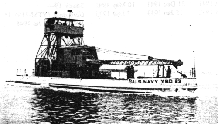

USS YSD The USS YSD was a 132.6 foot long, steel hulled, Seaplane wrecking derrick. December of 1957, the vessel sank north of Nomansland Island, Martha's Vineyard. 
Click on image to go return to USS YSD page.
Go to Shipwrecks page Go to MWDC home page